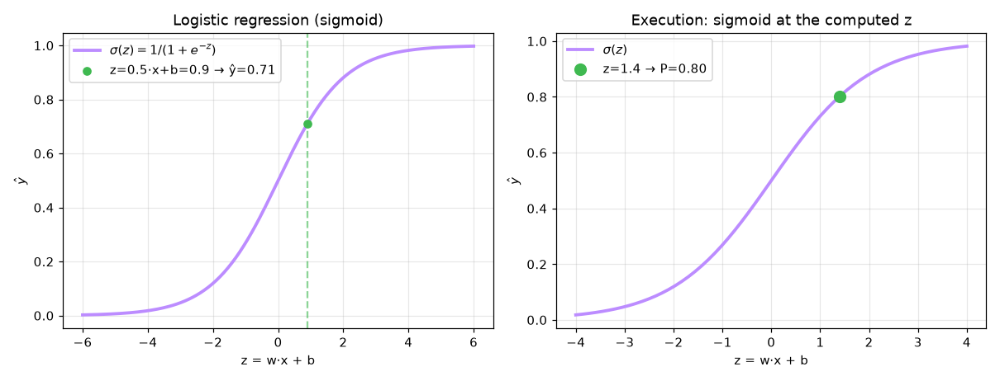

Logistic Regression — AI engineering example · part of the MLOps monorepo
This example is grounded in Logistic Regression. The equations below drive every forward and backward pass in the implementation.
Logistic regression models $P(y=1|x)$ via the sigmoid function. Binary cross-entropy loss penalizes confident wrong predictions. The gradient simplifies to $\hat{y} - y$, enabling efficient SGD.
Concrete forward-pass / update evaluation using the algorithm's own equations:
A step-by-step, intuitive explanation with concrete data so the formal equations above become clear:
Run this self-contained snippet in a Python shell to watch every step execute and print its value:
import numpy as np
x, w, b = 2.0, 1.2, -1.0 # one feature, trained weight & bias
z = w*x + b # linear combination (logit)
print("z =", z)
yh = 1/(1 + np.exp(-z)) # sigmoid squashes z into a (0,1) probability
print("P(spam) =", round(yh, 3))
print("BCE (y=1) =", round(-np.log(yh), 3)) # binary cross-entropy when true label is 1
Plots of the execution above — left: the concept; right: the step-by-step computation visualised. Sigmoid curve with decision boundary overlay; ROC and precision-recall curves.
The example follows a consistent data → train → evaluate → serve pipeline. Inputs are loaded and validated, transformed by the core algorithm, scored against held-out data, and exposed through a REST API.
| Class | Public methods | Responsibility |
|---|---|---|
PredictRequest | — | Single email spam prediction request. |
PredictBulkRequest | — | Bulk email spam prediction request. |
PredictResponse | — | Prediction response. |
BulkPredictResponse | — | Bulk prediction response. |
DriftResponse | — | Drift detection response. |
StatsResponse | — | Model statistics response. |
SpamDetectionNN | _he_init, _xavier_init, _forward, fit, predict_proba, predict, accuracy, precision, recall, f1_score, roc_auc, evaluate, save, load, to_dict | Feedforward neural network for binary spam classification. Architecture: Input -> Hidden (ReLU) -> Output (Sigmoid) Args: hidden_dim: Number of neurons in the hidden layer learning_rate: Gradient descent step size n_iterations: Maximum number of training iterations weight_decay: L2 regularization strength random_seed: Random seed for reproducibility |
data.py reads the source dataset and splits train/test.model.py applies the mathematics from Section 1.api.py exposes prediction endpoints with drift detection.Key design choices in this module: a pure-NumPy implementation (no PyTorch/TensorFlow), schema validation via ai_core.validation, structured JSON logging through ai_core.logging, Prometheus metrics from ai_core.metrics, and MLflow/model-registry persistence via ai_core.model_registry. The FastAPI service wraps the trained model with observability middleware from ai_core.fastapi_middleware.
The most important behaviour is summarised below; full source for each module is collapsible so the page stays readable while remaining self-contained.
SpamDetectionNN.fit(X, y, X_val, y_val)Train the neural network using batch gradient descent. Args: X: Training features (n_samples, n_features) y: Training labels (n_samples,) — 1=spam, 0=ham X_val: Optional validation features y_val: Optional validation labels Returns: self
SpamDetectionNN.predict(X, threshold)Return 1 (spam) if probability >= threshold, else 0 (ham).
SpamDetectionNN.evaluate(X, y)Compute all evaluation metrics.
"""Feedforward neural network for email spam classification.
A multi-layer perceptron (MLP) with one hidden layer, trained via
backpropagation and batch gradient descent. Built from scratch with NumPy.
Architecture:
Input (n_features) -> Hidden (hidden_dim, ReLU) -> Output (1, Sigmoid)
Loss: Binary Cross-Entropy
Optimizer: Gradient Descent with He initialization
"""
from dataclasses import dataclass, field
from typing import Literal
import numpy as np
def _relu(z: np.ndarray) -> np.ndarray:
"""ReLU activation function."""
return np.maximum(0, z)
def _relu_derivative(z: np.ndarray) -> np.ndarray:
"""Derivative of ReLU."""
return (z > 0).astype(z.dtype)
def _sigmoid(z: np.ndarray) -> np.ndarray:
"""Sigmoid activation with numerical stability."""
z = np.clip(z, -500, 500)
return 1 / (1 + np.exp(-z))
def _binary_cross_entropy(y_true: np.ndarray, y_pred: np.ndarray) -> float:
"""Binary cross-entropy loss."""
eps = 1e-9
y_pred = np.clip(y_pred, eps, 1 - eps)
return float(-np.mean(y_true * np.log(y_pred) + (1 - y_true) * np.log(1 - y_pred)))
@dataclass
class SpamDetectionNN:
"""Feedforward neural network for binary spam classification.
Architecture: Input -> Hidden (ReLU) -> Output (Sigmoid)
Args:
hidden_dim: Number of neurons in the hidden layer
learning_rate: Gradient descent step size
n_iterations: Maximum number of training iterations
weight_decay: L2 regularization strength
random_seed: Random seed for reproducibility
"""
hidden_dim: int = 16
learning_rate: float = 0.01
n_iterations: int = 1000
weight_decay: float = 0.001
hidden_activation: Literal["relu", "tanh"] = "relu"
random_seed: int = 42
# Learned parameters
input_dim: int = 0
W1: np.ndarray | None = None
b1: np.ndarray | None = None
W2: np.ndarray | None = None
b2: float | None = None
# Training metadata
training_mode: str = "supervised"
loss_history: list[float] = field(default_factory=list)
val_accuracy_history: list[float] = field(default_factory=list)
mean_: np.ndarray | None = None
std_: np.ndarray | None = None
def _he_init(self, n_in: int, n_out: int, rng: np.random.Generator) -> np.ndarray:
"""He initialization for ReLU networks."""
return rng.normal(0, np.sqrt(2.0 / n_in), (n_in, n_out))
def _xavier_init(self, n_in: int, n_out: int, rng: np.random.Generator) -> np.ndarray:
"""Xavier initialization for tanh networks."""
return rng.normal(0, np.sqrt(1.0 / n_in), (n_in, n_out))
def _forward(self, X: np.ndarray) -> tuple[np.ndarray, np.ndarray, np.ndarray]:
"""Forward pass through the network.
Returns: (output_probs, hidden_activations, z1)
"""
z1 = np.dot(X, self.W1) + self.b1
a1 = _relu(z1) if self.hidden_activation == "relu" else np.tanh(z1)
z2 = np.dot(a1, self.W2) + self.b2
output = _sigmoid(z2)
return output, a1, z1
def fit(
self,
X: np.ndarray,
y: np.ndarray,
X_val: np.ndarray | None = None,
y_val: np.ndarray | None = None,
) -> "SpamDetectionNN":
"""Train the neural network using batch gradient descent.
Args:
X: Training features (n_samples, n_features)
y: Training labels (n_samples,) — 1=spam, 0=ham
X_val: Optional validation features
y_val: Optional validation labels
Returns:
self
"""
rng = np.random.default_rng(self.random_seed)
X = np.asarray(X, dtype=float)
y = np.asarray(y, dtype=float).flatten()
n_samples, n_features = X.shape
self.input_dim = n_features
# Normalize features
self.mean_ = X.mean(axis=0)
self.std_ = np.where(X.std(axis=0) < 1e-8, 1.0, X.std(axis=0))
X_norm = (X - self.mean_) / self.std_
# Normalize validation set
X_val_norm = None
if X_val is not None and y_val is not None:
X_val_norm = (X_val - self.mean_) / self.std_
self.val_accuracy_history = []
# Initialize weights
if self.hidden_activation == "relu":
self.W1 = self._he_init(n_features, self.hidden_dim, rng)
else:
self.W1 = self._xavier_init(n_features, self.hidden_dim, rng)
self.b1 = np.zeros(self.hidden_dim)
self.W2 = self._xavier_init(self.hidden_dim, 1, rng)
self.b2 = 0.0
self.loss_history = []
for epoch in range(self.n_iterations):
# Forward pass
output, a1, z1 = self._forward(X_norm)
loss = _binary_cross_entropy(y, output.flatten())
# L2 regularization term
l2_penalty = self.weight_decay * (np.sum(self.W1**2) + np.sum(self.W2**2))
loss += l2_penalty
self.loss_history.append(loss)
# Backpropagation
m = n_samples
dz2 = (output.flatten() - y) / m # dL/dz2
dW2 = np.dot(a1.T, dz2.reshape(-1, 1)) + self.weight_decay * self.W2
db2 = float(np.sum(dz2))
da1 = np.dot(dz2.reshape(-1, 1), self.W2.T)
if self.hidden_activation == "relu":
dz1 = da1 * _relu_derivative(z1)
else:
dz1 = da1 * (1 - np.tanh(z1) ** 2)
dW1 = np.dot(X_norm.T, dz1) + self.weight_decay * self.W1
db1 = np.sum(dz1, axis=0)
# Gradient descent
self.W1 -= self.learning_rate * dW1
self.b1 -= self.learning_rate * db1
self.W2 -= self.learning_rate * dW2
self.b2 -= self.learning_rate * db2
# Track validation accuracy
if X_val_norm is not None and y_val is not None and epoch % 50 == 0:
val_acc = self.accuracy(X_val_norm, y_val)
self.val_accuracy_history.append(val_acc)
# Early stopping
if epoch > 100 and abs(self.loss_history[-1] - self.loss_history[-100]) < 1e-7:
break
return self
def predict_proba(self, X: np.ndarray) -> np.ndarray:
"""Return spam probability for each email."""
X = np.asarray(X, dtype=float)
X_norm = (X - self.mean_) / self.std_
probs, _, _ = self._forward(X_norm)
return probs.flatten()
def predict(self, X: np.ndarray, threshold: float = 0.5) -> np.ndarray:
"""Return 1 (spam) if probability >= threshold, else 0 (ham)."""
return (self.predict_proba(X) >= threshold).astype(int)
def accuracy(self, X: np.ndarray, y: np.ndarray) -> float:
"""Compute classification accuracy."""
return float(np.mean(self.predict(X) == y))
def precision(self, X: np.ndarray, y: np.ndarray) -> float:
"""Compute precision (positive predictive value)."""
predictions = self.predict(X)
tp = np.sum((predictions == 1) & (y == 1))
fp = np.sum((predictions == 1) & (y == 0))
if tp + fp == 0:
return 0.0
return float(tp / (tp + fp))
def recall(self, X: np.ndarray, y: np.ndarray) -> float:
"""Compute recall (sensitivity)."""
predictions = self.predict(X)
tp = np.sum((predictions == 1) & (y == 1))
fn = np.sum((predictions == 0) & (y == 1))
if tp + fn == 0:
return 0.0
return float(tp / (tp + fn))
def f1_score(self, X: np.ndarray, y: np.ndarray) -> float:
"""Compute F1 score."""
p = self.precision(X, y)
r = self.recall(X, y)
if p + r == 0:
return 0.0
return float(2 * p * r / (p + r))
def roc_auc(self, X: np.ndarray, y: np.ndarray) -> float:
"""Compute ROC AUC approximation."""
probs = self.predict_proba(X)
n_pos = np.sum(y == 1)
n_neg = np.sum(y == 0)
if n_pos == 0 or n_neg == 0:
return 0.5
rankings = np.argsort(-probs)
sorted_y = y[rankings]
rank_sum = np.sum(np.where(sorted_y == 1)[0] + 1)
auc = (rank_sum - n_pos * (n_pos + 1) / 2) / (n_pos * n_neg)
return float(auc)
def evaluate(self, X: np.ndarray, y: np.ndarray) -> dict[str, float]:
"""Compute all evaluation metrics."""
return {
"accuracy": self.accuracy(X, y),
"precision": self.precision(X, y),
"recall": self.recall(X, y),
"f1": self.f1_score(X, y),
"roc_auc": self.roc_auc(X, y),
}
def save(self, path: str) -> None:
"""Save model parameters to disk."""
if self.W1 is None:
raise ValueError("Cannot save untrained model")
np.savez(
path,
W1=self.W1,
b1=self.b1,
W2=self.W2,
b2=np.array([self.b2]) if self.b2 is not None else np.array([0.0]),
input_dim=np.array([self.input_dim]),
hidden_dim=np.array([self.hidden_dim]),
learning_rate=np.array([self.learning_rate]),
n_iterations=np.array([self.n_iterations]),
weight_decay=np.array([self.weight_decay]),
hidden_activation=np.array([self.hidden_activation]),
random_seed=np.array([self.random_seed]),
mean_=self.mean_,
std_=self.std_,
loss_history=np.array(self.loss_history),
val_accuracy_history=np.array(self.val_accuracy_history),
training_mode=np.array([self.training_mode]),
)
@classmethod
def load(cls, path: str) -> "SpamDetectionNN":
"""Load model parameters from disk."""
data = np.load(path)
model = cls(
hidden_dim=int(data["hidden_dim"].item()),
learning_rate=float(data["learning_rate"].item()),
n_iterations=int(data["n_iterations"].item()),
weight_decay=float(data["weight_decay"].item()),
hidden_activation=str(data["hidden_activation"].item()),
random_seed=int(data["random_seed"].item()),
)
model.W1 = data["W1"]
model.b1 = data["b1"]
model.W2 = data["W2"]
model.b2 = float(data["b2"].item())
model.input_dim = int(data["input_dim"].item())
model.mean_ = data["mean_"]
model.std_ = data["std_"]
model.loss_history = list(data["loss_history"])
model.val_accuracy_history = list(data["val_accuracy_history"])
model.training_mode = str(data["training_mode"].item())
return model
def to_dict(self) -> dict:
"""Return model configuration as a dict."""
return {
"input_dim": self.input_dim,
"hidden_dim": self.hidden_dim,
"learning_rate": self.learning_rate,
"n_iterations": self.n_iterations,
"weight_decay": self.weight_decay,
"hidden_activation": self.hidden_activation,
"random_seed": self.random_seed,
"training_mode": self.training_mode,
"n_epochs_run": len(self.loss_history),
"final_loss": self.loss_history[-1] if self.loss_history else 0.0,
}"""Training pipeline for email spam detection using a feedforward neural network."""
import argparse
import os
from pathlib import Path
from ai_core.logging import get_logger, setup_logging
from ai_core.model_registry import ModelRegistry
from ai_core.validation import DataValidator, create_email_spam_schema
from classification_email_spam.data import load_training_data, save_training_data, train_test_split
from classification_email_spam.model import SpamDetectionNN
logger = get_logger(__name__)
def train(
model_dir: Path,
data_path: Path | None = None,
n_samples: int = 1000,
hidden_dim: int = 16,
learning_rate: float = 0.01,
n_iterations: int = 1000,
weight_decay: float = 0.001,
threshold_percentile: float = 95.0,
model_version: str = "1.0.0",
register_to_mlflow: bool = False,
test_size: float = 0.2,
random_seed: int = 42,
) -> dict:
"""Train the spam detection neural network and save artifacts."""
X, y = load_training_data(data_path, n_samples=n_samples, random_seed=random_seed)
logger.info("Loaded training data", n_samples=len(X), data_path=str(data_path))
# Validate training data
validator = DataValidator(create_email_spam_schema())
validation = validator.validate(X, y)
if not validation.valid:
logger.error("Training data validation failed", errors=validation.errors)
raise ValueError(f"Training data validation failed: {validation.errors}")
logger.info("Training data validated", stats=validation.stats)
# Split train/test
X_train, X_test, y_train, y_test = train_test_split(
X, y, test_size=test_size, random_seed=random_seed
)
logger.info(
"Data split",
n_train=len(X_train),
n_test=len(X_test),
test_size=test_size,
random_seed=random_seed,
)
# Save training data for reproducibility
model_dir.mkdir(parents=True, exist_ok=True)
save_training_data(X, y, model_dir / "training_data.csv")
# Train model
model = SpamDetectionNN(
hidden_dim=hidden_dim,
learning_rate=learning_rate,
n_iterations=n_iterations,
weight_decay=weight_decay,
random_seed=random_seed,
)
model.fit(X_train, y_train, X_val=X_test, y_val=y_test)
# Evaluate
train_metrics = model.evaluate(X_train, y_train)
test_metrics = model.evaluate(X_test, y_test)
logger.info(
"Training complete",
training_mode=model.training_mode,
n_epochs=len(model.loss_history),
final_loss=model.loss_history[-1] if model.loss_history else 0.0,
train_metrics=train_metrics,
test_metrics=test_metrics,
)
# Save model
model_path = model_dir / f"spam_detection_model_v{model_version}.npz"
model.save(str(model_path))
# Save training chart
_save_chart(model, model_dir, model_version)
# Combined metrics for registry
metrics = {
**test_metrics,
"training_mode": "supervised",
"n_epochs_run": float(len(model.loss_history)),
"final_loss": model.loss_history[-1] if model.loss_history else 0.0,
"train_accuracy": train_metrics["accuracy"],
"train_f1": train_metrics["f1"],
"n_train_samples": float(len(X_train)),
"n_test_samples": float(len(X_test)),
"hidden_dim": float(hidden_dim),
"learning_rate": float(learning_rate),
"weight_decay": float(weight_decay),
"n_features": float(X_train.shape[1]),
}
# Register model
registry = ModelRegistry(base_dir=model_dir)
registry.save_model(
model_name="email-spam-detection",
model_version=model_version,
model_type="supervised_classification",
metrics=metrics,
parameters={
"hidden_dim": hidden_dim,
"learning_rate": learning_rate,
"n_iterations": n_iterations,
"weight_decay": weight_decay,
"random_seed": random_seed,
},
artifacts={
f"spam_detection_model_v{model_version}.npz": model_path,
"training_data.csv": model_dir / "training_data.csv",
},
tags={
"framework": "numpy",
"task": "classification",
"model_type": "feedforward_neural_network",
},
)
if register_to_mlflow:
registry.log_to_mlflow(
model_name="email-spam-detection",
model_version=model_version,
metrics=metrics,
params={
"hidden_dim": hidden_dim,
"learning_rate": learning_rate,
"n_iterations": n_iterations,
"weight_decay": weight_decay,
"random_seed": random_seed,
},
artifacts={
"model": str(model_path),
"chart": str(model_dir / f"spam_classification_v{model_version}.png"),
"training_data": str(model_dir / "training_data.csv"),
},
tags={"model_type": "classification", "framework": "numpy"},
)
logger.info(
"Registered model to MLflow", model="email-spam-detection", version=model_version
)
return metrics
def _save_chart(model: SpamDetectionNN, output_dir: Path, version: str) -> None:
"""Save the training loss chart."""
import matplotlib
matplotlib.use("Agg")
import matplotlib.pyplot as plt
if not model.loss_history:
return
fig, ax = plt.subplots(figsize=(10, 5))
ax.plot(model.loss_history, color="steelblue", linewidth=1.5)
ax.set_xlabel("Training Iteration")
ax.set_ylabel("Loss (Binary Cross-Entropy + L2)")
ax.set_title("Email Spam Detection NN Training Loss")
ax.grid(True, alpha=0.3)
ax.set_yscale("log")
plt.tight_layout()
chart_path = output_dir / f"spam_classification_v{version}.png"
plt.savefig(str(chart_path), dpi=100)
plt.close()
logger.info("Chart saved", path=str(chart_path))
def main():
parser = argparse.ArgumentParser(description="Train email spam detection neural network")
parser.add_argument("--model-dir", type=Path, default=Path(os.getenv("MODEL_DIR", "/models")))
parser.add_argument("--data-path", type=Path, default=None)
parser.add_argument("--n-samples", type=int, default=int(os.getenv("N_SAMPLES", "1000")))
parser.add_argument("--hidden-dim", type=int, default=int(os.getenv("HIDDEN_DIM", "16")))
parser.add_argument(
"--learning-rate", type=float, default=float(os.getenv("LEARNING_RATE", "0.01"))
)
parser.add_argument("--n-iterations", type=int, default=int(os.getenv("N_ITERATIONS", "1000")))
parser.add_argument(
"--weight-decay", type=float, default=float(os.getenv("WEIGHT_DECAY", "0.001"))
)
parser.add_argument("--model-version", type=str, default=os.getenv("MODEL_VERSION", "1.0.0"))
parser.add_argument("--test-size", type=float, default=float(os.getenv("TEST_SIZE", "0.2")))
parser.add_argument("--random-seed", type=int, default=int(os.getenv("RANDOM_SEED", "42")))
parser.add_argument(
"--register-mlflow",
action="store_true",
default=os.getenv("REGISTER_MLFLOW", "false").lower() == "true",
)
parser.add_argument("--log-level", type=str, default=os.getenv("LOG_LEVEL", "INFO"))
args = parser.parse_args()
setup_logging(args.log_level)
args.model_dir.mkdir(parents=True, exist_ok=True)
metrics = train(
model_dir=args.model_dir,
data_path=args.data_path,
n_samples=args.n_samples,
hidden_dim=args.hidden_dim,
learning_rate=args.learning_rate,
n_iterations=args.n_iterations,
weight_decay=args.weight_decay,
model_version=args.model_version,
register_to_mlflow=args.register_mlflow,
test_size=args.test_size,
random_seed=args.random_seed,
)
logger.info("Training finished", metrics=metrics, model_dir=str(args.model_dir))
if __name__ == "__main__":
main()"""Data loading and preprocessing for email spam detection."""
from pathlib import Path
import numpy as np
import pandas as pd
FEATURE_NAMES = [
"has_free",
"has_win",
"has_link",
"has_exclamation",
"has_meeting",
"email_length",
"has_caps",
"has_money",
"num_links",
"num_exclamations",
"has_urgent",
"sender_reputation",
]
DEFAULT_N_SAMPLES = 1000
def generate_synthetic_data(
n_samples: int = DEFAULT_N_SAMPLES,
random_seed: int = 42,
) -> tuple[np.ndarray, np.ndarray]:
"""Generate synthetic email features with spam/ham labels.
Returns:
Tuple of (X, y) where X is feature matrix and y is labels (1=spam, 0=ham).
"""
rng = np.random.default_rng(random_seed)
n_spam = n_samples // 2
n_ham = n_samples - n_spam
spam_emails = _generate_spam(n_spam, rng)
ham_emails = _generate_ham(n_ham, rng)
X = np.vstack([spam_emails, ham_emails])
y = np.concatenate([np.ones(n_spam, dtype=int), np.zeros(n_ham, dtype=int)])
indices = rng.permutation(len(X))
return X[indices], y[indices]
def _generate_spam(n: int, rng: np.random.Generator) -> np.ndarray:
"""Generate synthetic spam email feature vectors."""
return np.column_stack(
[
rng.integers(0, 2, n),
rng.integers(0, 2, n),
rng.integers(0, 2, n),
rng.integers(0, 2, n),
rng.integers(0, 2, n),
rng.integers(5, 50, n),
rng.integers(0, 2, n),
rng.integers(0, 2, n),
rng.integers(3, 15, n),
rng.integers(5, 20, n),
rng.integers(0, 2, n),
rng.uniform(0.0, 0.3, n),
]
).astype(float)
def _generate_ham(n: int, rng: np.random.Generator) -> np.ndarray:
"""Generate synthetic legitimate email feature vectors."""
return np.column_stack(
[
rng.choice(2, size=n, p=[0.7, 0.3]),
rng.choice(2, size=n, p=[0.9, 0.1]),
rng.choice(2, size=n, p=[0.6, 0.4]),
rng.choice(2, size=n, p=[0.5, 0.5]),
rng.choice(2, size=n, p=[0.3, 0.7]),
rng.integers(20, 100, n),
rng.choice(2, size=n, p=[0.3, 0.7]),
rng.choice(2, size=n, p=[0.1, 0.9]),
rng.integers(0, 5, n),
rng.integers(0, 3, n),
rng.choice(2, size=n, p=[0.9, 0.1]),
rng.uniform(0.7, 1.0, n),
]
).astype(float)
def load_training_data(
data_path: Path | None = None,
n_samples: int = DEFAULT_N_SAMPLES,
random_seed: int = 42,
) -> tuple[np.ndarray, np.ndarray]:
"""Load or generate email data for training."""
if data_path and Path(data_path).exists():
df = pd.read_csv(data_path)
X = df[FEATURE_NAMES].values.astype(float)
y = df["is_spam"].values.astype(int)
return X, y
return generate_synthetic_data(n_samples=n_samples, random_seed=random_seed)
def save_training_data(X: np.ndarray, y: np.ndarray, path: Path) -> None:
"""Save training data to CSV."""
path = Path(path)
path.parent.mkdir(parents=True, exist_ok=True)
df = pd.DataFrame(X, columns=FEATURE_NAMES)
df["is_spam"] = y
df.to_csv(path, index=False)
def train_test_split(
X: np.ndarray, y: np.ndarray, test_size: float = 0.2, random_seed: int | None = None
) -> tuple[np.ndarray, np.ndarray, np.ndarray, np.ndarray]:
"""Split data into train and test sets."""
n = len(X)
n_test = max(1, int(n * test_size))
if random_seed is not None:
rng = np.random.default_rng(random_seed)
indices = rng.permutation(n)
else:
indices = np.random.permutation(n)
test_idx = indices[:n_test]
train_idx = indices[n_test:]
return X[train_idx], X[test_idx], y[train_idx], y[test_idx]"""Production serving API for email spam detection via feedforward neural network."""
import os
import time
from contextlib import asynccontextmanager
from pathlib import Path
import numpy as np
from ai_core.drift import DriftDetector
from ai_core.fastapi_middleware import add_observability_middleware
from ai_core.logging import get_logger, setup_logging
from ai_core.metrics import MetricsCollector
from ai_core.model_registry import ModelRegistry
from ai_core.validation import DataValidator, create_email_spam_schema
from fastapi import FastAPI, HTTPException, Response
from pydantic import BaseModel, Field
from classification_email_spam.data import FEATURE_NAMES
from classification_email_spam.model import SpamDetectionNN
logger = get_logger(__name__)
# Configuration
MODEL_DIR = Path(os.getenv("MODEL_DIR", "/models"))
MODEL_VERSION = os.getenv("MODEL_VERSION", "latest")
METRICS_PORT = int(os.getenv("METRICS_PORT", os.getenv("SPAM_NN_METRICS_PORT", "8008")))
DRIFT_THRESHOLD = float(os.getenv("DRIFT_THRESHOLD", "0.2"))
class PredictRequest(BaseModel):
"""Single email spam prediction request."""
features: list[float] = Field(..., min_length=12, max_length=12)
class PredictBulkRequest(BaseModel):
"""Bulk email spam prediction request."""
requests: list[list[float]] = Field(..., min_length=1, max_length=100)
class PredictResponse(BaseModel):
"""Prediction response."""
is_spam: bool
spam_probability: float
label: str
model_version: str
training_mode: str
class BulkPredictResponse(BaseModel):
"""Bulk prediction response."""
predictions: list[PredictResponse]
model_version: str
class DriftResponse(BaseModel):
"""Drift detection response."""
total_features: int
drifted_features: int
drift_ratio: float
drifted: list[dict]
all_results: list[dict]
class StatsResponse(BaseModel):
"""Model statistics response."""
n_features: int
hidden_dim: int
training_mode: str
n_epochs_run: int
final_loss: float
model_version: str
# Global model state
_model: SpamDetectionNN | None = None
_model_version: str = "unknown"
_metrics: MetricsCollector | None = None
_validator: DataValidator | None = None
_drift_detector: DriftDetector | None = None
_reference_data: np.ndarray | None = None
_recent_predictions: list[list[float]] = []
@asynccontextmanager
async def lifespan(app: FastAPI):
"""Load model at startup and clean up at shutdown."""
global _model, _model_version, _metrics, _validator, _drift_detector, _reference_data
setup_logging(os.getenv("LOG_LEVEL", "INFO"))
_metrics = MetricsCollector("email_spam_detection", port=METRICS_PORT)
app.state.metrics = _metrics
_validator = DataValidator(create_email_spam_schema())
_drift_detector = DriftDetector(
feature_names=FEATURE_NAMES,
feature_types={f: "float" for f in FEATURE_NAMES},
psi_threshold=DRIFT_THRESHOLD,
)
_model, _model_version = _load_model()
_metrics.set_model_version(_model_version)
_metrics.set_model_info(
model_name="email-spam-detection",
model_version=_model_version,
model_type="supervised_classification",
)
_reference_data = _load_reference_data()
logger.info("Model loaded", model="email-spam-detection", version=_model_version)
yield
logger.info("Shutting down email-spam-detection API")
def _load_model() -> tuple[SpamDetectionNN, str]:
"""Load the latest model from the registry or model directory with resilient fallback."""
registry = ModelRegistry(base_dir=MODEL_DIR)
try:
if MODEL_VERSION == "latest":
models = registry.list_models()
spam_models = [m for m in models if m.get("model_name") == "email-spam-detection"]
if spam_models:
spam_models.sort(key=lambda m: m["model_version"], reverse=True)
latest = spam_models[0]
model_dir = Path(latest["artifact_path"])
npz_files = list(model_dir.glob("spam_detection_model_*.npz")) + list(
model_dir.glob("*.npz")
)
if npz_files:
return SpamDetectionNN.load(str(npz_files[0])), latest["model_version"]
else:
model_dir = MODEL_DIR / "email-spam-detection" / MODEL_VERSION
if model_dir.exists():
npz_files = list(model_dir.glob("spam_detection_model_*.npz")) + list(
model_dir.glob("*.npz")
)
if npz_files:
return SpamDetectionNN.load(str(npz_files[0])), MODEL_VERSION
except Exception as e:
logger.warning(f"Registry lookup failed: {e}")
# Try direct model in MODEL_DIR
npz_path = MODEL_DIR / "spam_detection_model.npz"
if npz_path.exists():
return SpamDetectionNN.load(str(npz_path)), "legacy"
# Try bundled artifacts directory
candidate_paths = [
Path("/app/artifacts/models/spam_detection_model_v1.0.0.npz"),
Path(__file__).resolve().parents[3]
/ "artifacts"
/ "models"
/ "spam_detection_model_v1.0.0.npz",
]
for p in candidate_paths:
if p.exists():
logger.info("Loading bundled baseline model", path=str(p))
return SpamDetectionNN.load(str(p)), "1.0.0-bundled"
# In-memory baseline fallback
logger.warning("No pre-existing model found on disk. Initializing baseline NN model.")
from classification_email_spam.data import generate_synthetic_data
X_base, y_base = generate_synthetic_data(n_samples=200, random_seed=42)
model = SpamDetectionNN(hidden_dim=16, learning_rate=0.01, n_iterations=500, random_seed=42)
model.fit(X_base, y_base)
return model, "1.0.0-baseline"
def _load_reference_data() -> np.ndarray | None:
"""Load reference training data for drift detection."""
candidate_csvs = [
MODEL_DIR / "email-spam-detection" / _model_version / "training_data.csv",
MODEL_DIR / "training_data.csv",
Path("/app/artifacts/models/training_data.csv"),
Path(__file__).resolve().parents[3] / "artifacts" / "models" / "training_data.csv",
]
for csv_path in candidate_csvs:
if csv_path.exists():
try:
import pandas as pd
df = pd.read_csv(csv_path)
if all(f in df.columns for f in FEATURE_NAMES):
return df[FEATURE_NAMES].values
except Exception as e:
logger.warning("Could not read reference csv", path=str(csv_path), error=str(e))
from classification_email_spam.data import generate_synthetic_data
X_base, _ = generate_synthetic_data(n_samples=200, random_seed=42)
return X_base
# Create FastAPI app
app = FastAPI(
title="Email Spam Detection API",
description="Feedforward neural network for classifying emails as spam or ham",
version="1.0.0",
lifespan=lifespan,
)
add_observability_middleware(app)
@app.get("/")
def read_root():
"""Service information."""
return {
"service": "email-spam-detection-api",
"version": "1.0.0",
"model_version": _model_version,
"training_mode": _model.training_mode if _model else "unknown",
"features": FEATURE_NAMES,
"endpoints": {
"health": "/health",
"predict": "POST /predict",
"predict/bulk": "POST /predict/bulk",
"stats": "GET /stats",
"drift": "GET /drift",
"metrics": "/metrics",
},
}
@app.get("/health")
def health_check():
"""Kubernetes liveness/readiness probe."""
if _model is None:
raise HTTPException(status_code=503, detail="Model not loaded")
return {
"status": "healthy",
"model_loaded": True,
"model_version": _model_version,
"training_mode": _model.training_mode if _model else "unknown",
}
@app.get("/metrics")
def metrics():
"""Prometheus metrics endpoint."""
from prometheus_client import CONTENT_TYPE_LATEST, generate_latest
return Response(content=generate_latest(), media_type=CONTENT_TYPE_LATEST)
@app.post("/reload")
def reload_model():
"""Dynamically reload the model from disk/registry."""
global _model, _model_version, _reference_data
try:
_model, _model_version = _load_model()
if _metrics:
_metrics.set_model_version(_model_version)
_metrics.set_model_info(
model_name="email-spam-detection",
model_version=_model_version,
model_type="supervised_classification",
)
_reference_data = _load_reference_data()
logger.info(
"Model reloaded dynamically", model="email-spam-detection", version=_model_version
)
return {"status": "reloaded", "model_version": _model_version}
except Exception as e:
logger.exception("Model reload failed", error=str(e))
raise HTTPException(status_code=500, detail=f"Reload failed: {e}") from e
@app.get("/drift", response_model=DriftResponse)
def drift_check():
"""Check for data drift between reference and recent predictions."""
if _drift_detector is None or _reference_data is None:
raise HTTPException(status_code=503, detail="Drift detection not available")
if len(_recent_predictions) < 10:
return DriftResponse(
total_features=len(FEATURE_NAMES),
drifted_features=0,
drift_ratio=0.0,
drifted=[],
all_results=[],
)
current = np.array(_recent_predictions[-100:])
results = _drift_detector.detect_drift(_reference_data, current)
summary = _drift_detector.summarize(results)
if _metrics:
_metrics.set_drift_ratio(summary["drift_ratio"])
return DriftResponse(**summary)
@app.get("/stats", response_model=StatsResponse)
def get_stats():
"""Return model statistics."""
if _model is None or _model.W1 is None:
raise HTTPException(status_code=503, detail="Model not loaded")
return StatsResponse(
n_features=_model.input_dim,
hidden_dim=_model.hidden_dim,
training_mode=_model.training_mode,
n_epochs_run=len(_model.loss_history),
final_loss=_model.loss_history[-1] if _model.loss_history else 0.0,
model_version=_model_version,
)
def _compute_prediction(features: list[float]) -> PredictResponse:
"""Core prediction logic shared by all prediction endpoints."""
if _model is None or _metrics is None or _validator is None:
raise HTTPException(status_code=503, detail="Model not loaded")
X = np.array([features])
validation = _validator.validate(X)
if not validation.valid:
raise HTTPException(status_code=422, detail=validation.errors)
start = time.time()
try:
proba = float(_model.predict_proba(X)[0])
is_spam = bool(proba >= 0.5)
duration = time.time() - start
_metrics.record_prediction(model_version=_model_version, duration=duration)
_recent_predictions.append(features)
if len(_recent_predictions) > 1000:
_recent_predictions.pop(0)
return PredictResponse(
is_spam=is_spam,
spam_probability=round(proba, 4),
label="SPAM" if is_spam else "NOT spam",
model_version=_model_version,
training_mode=_model.training_mode if _model else "unknown",
)
except Exception as e:
_metrics.record_error(model_version=_model_version, error_type="prediction")
logger.exception("Prediction failed", error=str(e))
raise HTTPException(status_code=500, detail="Prediction failed") from e
@app.post("/predict", response_model=PredictResponse)
def predict(body: PredictRequest):
"""Classify a single email as spam or ham."""
return _compute_prediction(body.features)
@app.post("/predict/bulk", response_model=BulkPredictResponse)
def predict_bulk(body: PredictBulkRequest):
"""Classify multiple emails as spam or ham."""
global _recent_predictions
if _model is None or _metrics is None or _validator is None:
raise HTTPException(status_code=503, detail="Model not loaded")
if len(body.requests) < 1 or len(body.requests) > 100:
raise HTTPException(status_code=422, detail="Batch size must be between 1 and 100")
X = np.array(body.requests)
validation = _validator.validate(X)
if not validation.valid:
raise HTTPException(status_code=422, detail=validation.errors)
start = time.time()
try:
probas = _model.predict_proba(X)
duration = time.time() - start
_metrics.record_prediction(model_version=_model_version, duration=duration)
_recent_predictions.extend(body.requests)
if len(_recent_predictions) > 1000:
_recent_predictions = _recent_predictions[-1000:]
predictions = [
PredictResponse(
is_spam=bool(proba >= 0.5),
spam_probability=round(float(proba), 4),
label="SPAM" if proba >= 0.5 else "NOT spam",
model_version=_model_version,
training_mode=_model.training_mode if _model else "unknown",
)
for proba in probas
]
return BulkPredictResponse(predictions=predictions, model_version=_model_version)
except Exception as e:
_metrics.record_error(model_version=_model_version, error_type="prediction")
logger.exception("Bulk prediction failed", error=str(e))
raise HTTPException(status_code=500, detail="Bulk prediction failed") from eThis example is a first-class consumer of the shared packages/ai-core library.
It reuses the following foundation modules instead of re-implementing infrastructure:
ai_core.config.Because every example shares ai_core, cross-cutting concerns (drift detection,
logging, metrics, model registry) behave identically across the 47 examples in this monorepo.